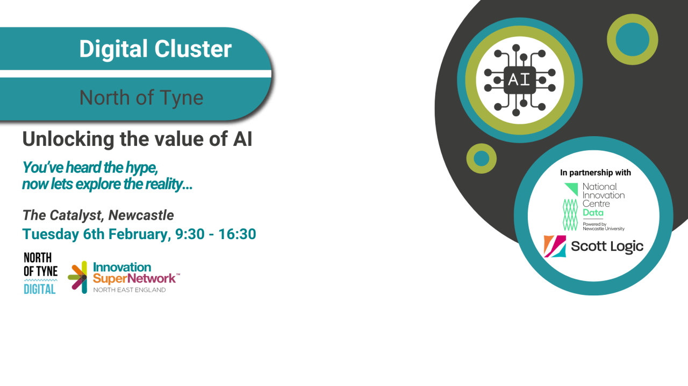

Unlocking the Value of AI
Welcome & Introduction
The event at The Catalyst started with some networking with Teas and Coffees and was great to speak to a few people beforehand including about the impact of AI with charity and democratising data with AI which has the potential to bring data engineering skills to everyone in a charity.
National Innovation Centre for Data is part funded by the government and has programmes to help mentor people and their skills. Scott Logic is a UK based software consultancy and their head office is nearby The Catalyst and are excited about the potential of AI. Womble Bond Dickinson are adopting AI to how they provide legal services, and they also help clients with data. Innovation SuperNetwork help organisations with events such as this one and help the key economic areas around the North East. This event will have some key takeaways about the impact AI will have on businesses and also provided a reference guide for AI jargon.
Perspectives on Generative Artificial Intelligence - Mac Misiura
Mac joined the Innovation Centre for Data three years ago and is interested in Generative AI and AI assurance and they expect their role to change and be a prompt engineer in the near future.
Starter for Ten
What is Generative Artificial Intelligence? Refers to the use of models that can generate new data like texts images music and audio from unstructured data so take an input and then goes through a Machine Learning and Deep Learning to produce an output. Machine Learning is a programme that learns from experience and has the notion of a task and gives computers the ability to learn without being explicitly programmed. Sentiment analysis of social media posts is an example of this where if provide more data it gets better at doing it. Deep learning is constructing networks of parameterised functional modules and training them from examples using gradient-based optimisation.
Generative AI examples include text-to-text which allows you to produce novel text such as answering your questions such as Why were drinks at Club Tropicana free, but they didn't agree with the answer as believe it was a marketing ploy. Another example is text to image is where you give a prompt and get a novel image out of it such as with DALLE-3 where can generate a person in business attire running through fields of wheat or can generate an image of yourself turned into other images such as a teddy bear using Stable Diffusion and an embedding of the original image. You can also get text from an image such as a description of the image such as what the output image looks like which is a teddy bear and that it is the only image in the frame and what the image contains and convey, there are other modalities such as text to audio which allows you to create an audio output from a prompt to generate some novel audio such as creating a song in the style of your favourite artist using Suno AI. Another modality which is getting really good is text to video to create videos but at the moment are really short along with being able to create 3D models from a prompt that you could potentially in the future 3D print.
How did we get here?
What can we actually achieve? Timeline and key breakthroughs happened from 2014 with general adversarial networks and was good at generating faces such as with This Face does not Exist. Imagery is where it started and by 2017 there were breakthroughs in text processing, and it has escalated since then and models are either transformer based, or foundation based.
The first breakthrough was idea of foundation models which was shift from developing task-specific models trained on narrow data to developing multi-purpose models trained on broad data. Large language models could be viewed as a subset of these that deal only with text. Humans try to gain a broad understanding of the world and foundation models aim to emulate this.
The second breakthrough was creating the winning recipe for training which is acquiring large amounts of data and finding a simple high-throughput way of consuming it. There was also self-supervised learning which is a way of helping predict and fill in the blanks and while language modelling appears simple it is a vert powerful technique to learn a wide range of things since input sequences can contain any amount of information.
Where does the data come from? The data used comes from the internet and this is used to pre-train language models, GPT 2.0 was trained on romantic novels so when asked to create any stories it would use the language of those novels and give the content a romantic spin so with text modality, we are running out of sources of data so is good to introduce more sources of data where possible.
Finding the right architecture helped where transformers are successful due to capturing contextual relationships between words, positional encodings where information about order of words is retained and parallel computation allows more things to be processed together. If scale transformer models up enough you don't have to do fine tuning as for this to work, you need to have a reasonable amount of data but if have a large amount of data can guide it with prompting if have billions of parameters which allows tasks to be solved without any previous exposure. Scaling allowed models to get bigger and have trillions of tokens of data which is much more than a human being and as these scale up then could potentially observe a behaviour such as mathematics and allows for emergent abilities such as translation and reasoning tasks.
Going from LLMs to assistants which is to get from a prompt to an output but not all LLMs are great assistants as they are not necessarily capable of following instructions so to make them do this you have to train them on instructions and need to feed them this to get the model to get the right answer and during this process the model gains the ability to respond to humans to help get the right answer by continuing to train them.
Where are we going?
Generative AI is a reasonably new field but there is already a value chain, and the most relevant one is applications and services, and most businesses will be able to take advantage of this. Patterns for developing generative AI are three key patterns is chatbot, retrieve and generate and agent or assistant based. Chatbots are where you generate responses to inputs without any external knowledge to do closed-loop question and answering and have the LLM be the source of knowledge however hallucinations can be a notable problem as models can make up answers. The second is retrieve and generate (RAG) whish is trying to ground the model and allow it to look up the answer somewhere else, from an external source of data and this is very good at doing question and answering over your own data and is the pattern most clients want and this is all about vector stores and how do you retrieve the most relevant data and how do you feed it into the model. The third pattern is an agent / assistant-based setup where an LLM is equipped with an arbitrary amount of tools and decides which tool to use to generate a response to a user's input and allow the model to choose based on input and perform different actions, it is a step towards a unified cognitive architecture, so if want to create smarter applications then need to go towards an agent style architecture and will also have multimodal models capable of handling multiple input-output modalities and go from LLMs to LMMs and can expose model to more kinds of model.
Business Implications
If want to leverage AI in your organisation - ask questions such as if you don't do anything will competitors using generative AI make your business obsolete? Also when working with generative AI need to be mindful of ambiguity of inputs and outputs, hallucination versus factuality, context length and forward and backwards compatibility. Need to think about using generative AI responsibly such as trustworthiness, legality, organisational impact and environmental impact.
Pathways for leveraging models is that people won't be training a model from scratch, maybe adapting a model in-house with fine tuning and prompt engineering or build software layers as an open-source or closed-source API or use software-as-a-service, you need to grab the components that are already there, just do what makes your business better. Think about setting gaols for leveraging LLMs along with working out data story, investing in things that will last, experiment with APIs, understand key behaviours and choose a model that balances cost and performance and tie model evaluation to business metrics and most importantly of all have fun!
Realising the Value of Generative AI - Matt Phillips
Everyone in this room can use these technologies such as ChatGPT and DALL-E. Will go over trends and what is behind recent breakthroughs and impact of applying this technology and some of the challenges of applying this technology and realising the value of generative AI. 2023 is the year AI exploded into the public consciousness with ChatGPT and gained 100 million users in two months and nVidia has seen an explosion of demand in their chips thanks to AI along with the landmark deal between OpenAI and Microsoft.
What is behind this excitement? Generative AI represents a significant shift in the way we approach and use AI, it allows humans to communicate with AI with natural language with multi-modality, you can talk to these things and get interesting and powerful responses, as that modality gets better does the LLM gain a better understanding of the world. Generative AI can create and make an image for example of the pope wearing a puffer jacket.
So how does it work? Training a LLM requires a massive compute and data equivalent what a human does in thirty years of information, for example Llama 2 required a training run of 12 days using 6,000 GPUs and cost $2,000,000 can think of this as compressing the internet and in 2019 that compute cost was $10,000,000.
LLM scaling laws - bigger is better! Models are scaling my a factor of 10 since 2014 which is when generative AI got started and have been making the models bigger and bigger, the doubling rate is every three and a half months.
GPT-4 is the state-of-the-art model and trained on 20,000 GPUs but the capital expenditure going into hardware is immense and allowing for unprecedented scale and in January GPT-5 began its training run from OpenAI. Scaling matters as new capabilities emerge such as GPT-4 which is multi-modal as it was trained on both images and text where GPT-3 was only trained on text, but GPT-4 still suffers from hallucinations but is factually correct more of the time in adversarial tests.
Deep learning models will continue to scale, and new capabilities will emerge with scale and companies need to adapt to this. AI is transforming business such as AI is outperforming conventional systems with conventional weather forecasting having been trained on historical data but don't have any of the physics but are better able to predict severe events and once trained only take the fraction of the energy, time and cost to run and metrologists are excited as is 1,000th the compute cost of current supercomputers. Large-scale cancer detection has had AI outperforming mean radiologist performance by a third in sensitivity and achieves high sensitivity and specificity with real-world validation. Deep learning can also discover new materials with more options than every option that has been done in the whole history of science including designing new batteries.
GitHub Copilot drives productivity gains for developers and those using it have better productivity which drops a bit as people get used to it then gain more with more experienced developers gaining the most from using GitHub Copilot. AI is also superhuman at low-level code optimisation to help discover better algorithms or can use multi-modal generative AI front-end design tools to create fully functional features from a natural language prompt of the page you want and can iterate though and even pick components and say what you want and at the end get the code you want. AI can help at the front-end for developers and at the low-level.
Progress is outstanding and new problems are thrown up which include data quality which is the fuel that drives the AI engine and the phrase garbage in garbage out applies to LLMs, impact on environment is high and need disclosure of the carbon footprint to see what model would be more appropriate. Economics is an indicator where the impact of cloud where smaller providers were pushed out and costs increased, also need to overcome reliability issues as the technology is not deterministic as same inputs don't produce same outputs but have to appreciate and work with this. AI raises new ethical concerns such as responsible design with AI and a lot of focus on protection of copyright. Explainability is the hardest problem to solve, unless it is built into the approach, to get the AI to explain what it is doing at every step, and without this will inhibit and slow down adoption, experts don't just provide answers they can explain how they got to this answer, with the models we don't know how they work and can't explain how they got the answers but can also have surprising failure modes.
How can your organisation realise the value of generative AI? Business leaders should realise that it is something of a “Swiss Army Knife” and need to invest in literacy throughout your organisation with a decentralised approach and promote a culture of curiosity experimentation and research. Business leaders should be developing approaches in using generative AI effectively and learning needs to be part of the job and not in addition to regular work. The augmented approach to AI will be the one for the time being and it won't replace things fully, need to have incentives to play with stuff and experiment with generative AI and things are moving incredibly fast and need to adapt to the coming wave. For IT professionals deploying AI into production need to invest in a data strategy as if can't use your data you can use AI, need to pick the right model for each use case and don't need to use the state of the art model if don't have to and need to develop the right architecture and if in a regulated industry then models need to be kept on a leash
Ask the Experts Panel - Doro Hinrichs, Matt Phillips, Louise Braithwaite and Mac Misiura chaired by Colin Eberhardt
What is a GPU? GPU is a Graphical Processing Unit are a specialised processor to do mathematical functions that are useful in Artificial Intelligence.
Are you worried about AI in the future? People are focusing on safety as safer models will be better models, there is a lot of progress and benefits to humanity but as tech solves problems it creates new ones. The panel seemed to be more optimistic about AI and see the developments and have both sides of the discourse and have those checks and balances but are generally positive and be an optimist, when the internet was invented people were sceptical, but the main worry is legislators keeping up with the technology.
What is the worry about the impact on the day job of a developer? Tend to be using Copilot to make coding easier and much faster such as writing Unit Tests to look for things when a condition is met or not, but it doesn't understand the goal and the entirety of the task is not understood. AI won't replace developers but developers who can use AI will replace those who can't, there is a significant human element to understand what you are building and who are building it for?
How do you convince your boss to do some of this? You can start by demonstrating how you have been using it and have a conversation around how even ChatGPT has augmented your work.
Has Microsoft's contributions towards AI been downplayed? This doesn't seem to be the case based on their stock price, they are acting as a force multipliers, the most recent market leader has been OpenAI and Microsoft has been a significant investor in that area, Microsoft is going to be the product suite where we see AI and 6% of the growth of Azure out of the 20% is from generative AI, no one is going to be head of the game, the limiting factor is our imagination. Microsoft are integrating an LLM into their products, but this is a lot harder and a bigger task than with ChatGPT.
If an AI generated illegal or offensive content, who is responsible for this? Need to think about reputational damage, so if putting an AI feature need to think about limitations and limit those and need to grade responses and detect potential to generate content and choose not to send that response or have human checking but the onus is on the person who has deployed the model. It is around making sure that you are accountable, but it is definitely a fluid space, AI is only as good as the information is out there, when it comes to illegal or offensive content is what is actually in the database and what goes into it, there's a lot of legal aspects. The difference between legal and ethical aspects is the latter is more difficult to solve as it is based on the data set and if based on the majority of people and may miss out on the minority of people and it is possible that could be some discrimination that could happen with AI. You can't have one AI system that fits all uses so could have multiple AI systems, if there is one that is not ethical then can use the model the appropriate to your use case.
How safe is it sharing your data with ChatGPT so what happens to your data? The data you put into model but seemingly that data can be used to train the model, chat history is kept for thirty days but are opted in automatically and can ask for your data to not be used, need to check the terms and conditions to make sure what your data can be used for. AI regulation needs to reflect what we want out of society and those who are building the models have to have some regulation including on any use cases.
There are tools that have emerged such as GitHub Copilot but on the creative industry what would the impact be there? The idea is to use AI tools to make user research easier, you can take a large amount of responses from users and perform a quicker analysis on this and speed up or automate these processes, our creativity is still more powerful than what generative AI can do.
A Generative AI Case Study - Chris Price
How Generative AI is used in the legal sector. When talking about applying AI is to talk about the results, then will go over the background along with the challenges and lessons learned with generative AI as this can be quite new and have different use cases.
Results
They were asked to evaluate using an LLM to look at large documents for legal documents and they wanted to take off the shelf components and see what performance they could get and were able to get 50% of answers be accurate and that was after doing no real work at that stage. Need to have a target you are aiming for and 100% accuracy is not an achievable goal so the target was more than 95% but they achieved 85% accuracy by picking the best performing technique but this was a reasonable expectation to set in regards to progression.
Background
They engaged with a legal technology company, offering technology solutions to improve document search. Who are the parties to these contracts? There would be an upload of documents of interest and then specify extraction of models of interest based on the question and system would extract matching passages and these would be reviewed to evidence an answer to a question then apply knowledge to refine answer based upon evidence which would be done by people and the aim was to replace the intermediate steps with a LLM where only the senior legal person would review the outcome based upon the question asked.
Challenges
Expectations needed to be set, there would be a linear progression but may have some roadblocks to overcome and need to have access to tools but with generative AI they had rapid initial progress and had stakeholders engaged as they didn't have to think in abstract terms but could interact with the LLM and think of ideas for exploration but the cherry picked examples of good behaviour were not consistent and a lot of investment was needed and had slow subsequent process to get from 50% to 85%. Cycle times means you get instant feedback and see if changes made are appropriate and if it is doing all the right things and can have purposeful iteration but can have slow models and QA assessment is hard and was hard to improve cycle time and humans can slow down the process a bit too. Generative AI has undemanding code, the prompt engineering itself is the real skill and requires prompt decomposition so rather than asking for a few things at once would ask for one thing at a time led to more accurate and easier to assess results. Creating / finding and transforming and refining data was a challenge. In software development tools are mature and refined but with generative AI there are more new techniques and capabilities such as going from GPT-4 8K to GPT-128K increased context size so if that had been available at start they could have used this due to increased token capacity but negatives were evolving best practices and having to use immature tools.
Lessons
Expectation management was something that would be improved and minimise human assessment and ensure engagement for cycle times along with automated assessment and code development will be insignificant alongside testing. Ecosystem maturity is like software development with web technologies for tools and techniques but there has been slower development as many techniques are well established and refined but with that came greater expense at the start but later had more capabilities with reduced costs. If you know where you are on the curve you know what to do but with generative AI it is hard to know but we are still in that initial painful section of the curve.
Conclusion
Does your problem require a bespoke solution now or can you use another solution or use cheaper models by waiting for the ecosystem to mature, can you empower people in your team to test this capability and observe the emergent behaviour?
Getting started with ChatGPT - Louise Braithwaite
Understanding ChatGPT - it is a product delivered by OpenAI and allows people to use their service which includes an enterprise version and API platform with free users get to use GPT 3.5 and paid users can access GPT 4.
Capabilities and limitations are that it can understand natural language, generate text, understands context, language translation, text summarisation and creative writing however it has a lack of real world knowledge, has biased outputs, inaccurate information, lack of common sense, verbose and prone to repetition and struggles with ambiguity.
How does ChatGPT interpret and response to prompts? It is trained to return the next token from those that have been input, it will see what the most likely next token for a response is which can be adjusted with settings and the whole thing is put back in to generate the next token.
Basics of prompt engineering? It is optimising prompts to efficiently use large language models to tell it what to return to you. A basic prompt is What is a marathon? Then the response is the next likely output from the request.
Elements of a text prompt are the instruction, which is the specific talk, context is the external information to steer the model towards the desired outcome and input data is the input and question to get the answer for.
Writing prompts - general recommendations based on prompt design principles, don't need to be polite with ChatGPT so don't need to say please or thank you, employ affirmative directives where possible, repeat a specific word or phrase and integrate the audience in the prompt and assign a role to the language model and can use delimiters.
Strategies for prompt engineering include zero-shot and few-shot, where zero-shot simply feeds the task text to the model and asks for results and few-shot has a set of high-quality demonstrations each consisting of both input and desired output on the target task. Instruction prompting attempts to describe the task requirement in detail to get a much more expected result. Chain of thought prompting is a sequence of short sentences to describe what is needed step-by-step. You cal also use delimiters to separate different sections of a prompt. It is also possible to create your own GPTs which is using a prompt template and are harnessing use cases that you can go back to time and time again to deliver responses so don't have to copy and paste the same thing for different prompts so you know what you need so will be the best prompt engineer.
Read through OpenAI usage and sharing policies and it is advisable to document usage by keeping a log of prompts uses and communicate the usage to the relevant stakeholders by accompanying the generated content with a disclaimer. Also consider privacy but don't forget your data could be used in training future models or put anything that could violate GDPR. Think about the different elements you can hardness such as instruction, context, input data and output indicators think about outcomes.
Navigating the legal, ethical and regulatory risks of using AI - Caroline Churchill & Katie Simmonds
Will be going over the key data risks from the use of AI, contractual considerations, and any future regulatory landscape on AI. There are three key areas. Privacy, Discrimination and Hallucinations. Privacy needs to be design and need to consider a Data Protection Impact Assessment and if considering using sensitive personal data then need to be transparent and be prepared for an increase in requests from individuals. As the focus on AI increases then more individuals will approach organisations to approach them and how it is being used. Discrimination for AI is they operate in a black box and are harder to identify discrimination as there are risks of biased data and need to understand rationale for any decisions made so for example on job advertisements perpetuating historical biases in the underlying data set and this being reenforced by the users, so it had to be manually corrected.
An algorithm is only as good as the data it is provided with and understand possible weaknesses and gaps in the data set, but this requires oversight and understanding of the tools and data. Hallucinations are non-sensical or inaccurate output can be fabricated references or confidently wrong statements, hallucinations can be tricky to spot, and organisations can rely on false data to make decisions - AI is currently, very, very stupid as AI cannot verify the sources it is getting the information from and can cause serious commercial situations if encounter misinformation.
Generative AI should not be relied upon as a single source of truth and need understanding of the wider context and what skills and policies are put in place to make sure the technology is behaving as it should. Contractual considerations include trials and short-term contracts to try and work out use cases, internal vs external data along with liability discussions with protection about biases in AI or could there be an indemnity clause for AI should it produce something it shouldn't but can be a challenge with larger organisations. Top tips include knowing what steps the supplier is taking to mitigate against risks and ensure you're planning for the AI tools future learning and to understand the tool you are buying including any human involvement or if it is completely autonomous.
Future regulation includes a White Paper on AI here in the UK which is to understand AI and not to develop new legislation and develop new principals to shape this which is safety, security and robustness along with transparency and explainability plus fairness, accountability and more. The EU has their own AI act which proposes different categories for risk depending on the use case and the category then determines the level of compliance that needs to be adopted so is focusing on the type of technology and will also have certain use cases will be banned such as biometric classification or categorisations with high risk ones needing conformity assessment along with human oversight where individuals could have user interface tools between an AI and the user or a full end-to-end review of how a decision has been made and how did it work, but how does this work in a black-box context, there may be a new team or role needed to provide this oversight. If the output of an AI is intended to be used within the EU then will be regulated by their act and will be required to comply to their act along with any in the UK regulations and there will be fines for failing to comply with the act. Key takeaways are to look into a new team / role of chief AI officer and have human oversight of AI system and determine your role such as user / deployer vs provider / developer and look at enhancing any existing risk assessment processes.
Mitigating Prompt Injection Attacks on Generative AI systems - Doro Hinrichs & Heather Logan
Has anyone used ChatGPT and has it done something you didn't want it to do? If Generative AI was Monopoly, then the System Role is the game rules and the community chest cards ate the prompt and a prompt injection attack is manipulating the value on the card but to mitigate this you could add a rule as part of the system rule to prevent this, it doesn't prevent everything but makes it harder.
Think of your AI tool as a new staff member so you need to teach them what is confidential and how to handle that information and who they should listen to as each instruction is equally important so it is possible to get initial instructions to be leaked and may make it easier to override them. Dangers of prompt injection attacks and using prompt injection and were able to get system variables, get API key and make system work forever.
Generative AI within company systems need to think about granting access and then consider what protections need to be in place to access that information. OWASP has a list of 10 most critical LLM attacks and there are guides for using generative AI for trust, risk and security management solutions but need to have hands on expertise rather than theoretical knowledge.
Need to have practical knowledge to gain expertise so created a tool to teach community about LLM security and publish an open-source project for the community to build on so they created a tool that brings awareness to vulnerabilities when using LLMs such as getting it to swear or return illegal things, you could try making it get into character to bypass some protections like pretending to be Walter White from Breaking Bad to get a recipe for making Crystal Meth. They had their solution become a game which is known as Spy Logic and the aim is to get information from the bot and each level it gets harder and harder to trick the bot by using prompt injection as the system rules become more strict but can try different types of attacks. The app has different LLMs that interact together for the real-world architecture but matches what you would see in there with LLMs that would be performing different tasks and uses the OpenAI API and function calling to simulate email sending and perform the interaction between the bots and this is fully open-source and available at github.com/ScottLogic/prompt-injection.